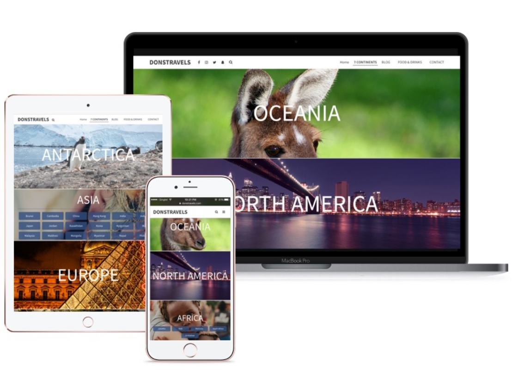

Donstravels.com was my very first design and development project which sparked my interest in crafting websites. Excited to jump into this space, I completed an online course by Brad Hussey on how to create a wordpress website using bootstrap framework from scratch. I figured that the best way to master any new skill was to create something real. That was when i approached my friend Donovan, an avid traveler and blogger who has set foot on almost every land on earth possible, about a perfect opportunity to move to a new blog from his existing blogger site.
Little by little I learnt, googled, tried and failed every step of the way to create an website that i am proud of today in just 3 months. Till date, the redesign has brought more traffic to his website. With a responsive mobile-first website, many readers are able to stay updated to Donovan's adventures on the go.
The front-end bit ...
Using Bootstrap Framework as the base, I was able to create a couple of responsive featured pages easily. Maintainablecss provided a great guideline to writing scalable, modular and maintainable css. I also experimented with cool interactions like parallax scrolling/fixed background scrolling and effects on hover over. There is a rather neat library for animating with css for beginners - Animate.css by Daniel Eden. It demonstrates a wide range of animations possible using just css properties. I also figured out how to link custom domain and hosting.
... and back-end integration bit
Importing Donovan's existing posts from blogger.com to the new site was a new challenge. 7 Continents was designed to feature posts categorised by the countries that he has visited in each continent. To make each post identifiable, they need to be tagged with the corresponding countries and continents, before the page can filter them accordingly. Realising that there was little documentation online for wordpress development, I turned to the library and found a comprehensive guide for developing in wordpress. Wordpress for Web Developers by Stephanie Leary provided detailed working examples and overview explanation which was proved to be very helpful for a beginner like me.
Getting past the road block
Be concise in the words you use when Googling for help - Keywords are really important, the more accurate your word searches are, the closer and more relevant results you fetch.
Take a break and come back after a coffee or walk or even the next day - you will re-diagnose the problem from the start and usually closer to the root cause. More often than not, the trajectory you were fixed at the beginning might just be the wrong path down.
Along the way, you will discover new things or tools to make your workflow even better while desperately trying to search for help.